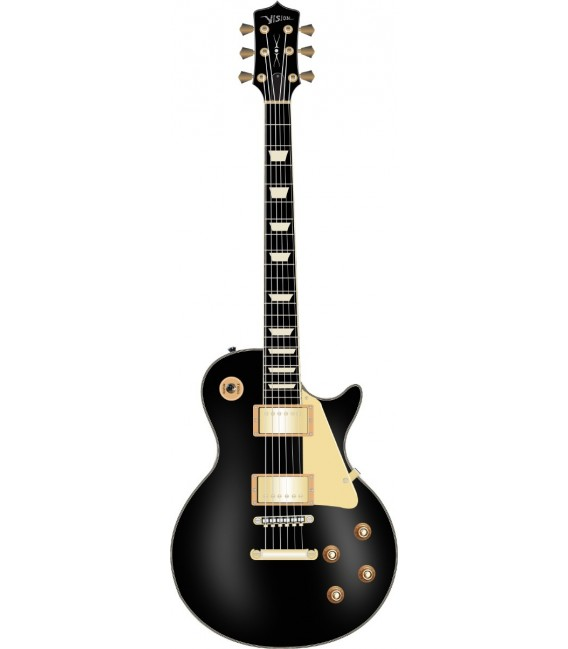

Gibson Les Paul
La Gibson Les Paul es un modelo de guitarra eléctrica y bajo de la marca Gibson Guitar Corporation. Fabricada desde 1952, es extensamente considerada, junto con la Fender Stratocaster, la guitarra eléctrica de cuerpo macizo más popular del mundo. Concebida inicialmente por Ted McCarty y el guitarrista Les Paul como una guitarra de altas prestaciones, fue producida a lo largo de la década de 1950 con progresivas variaciones hasta dejar de fabricarse en 1960 con ese nombre, en favor de la Gibson SG —básicamente una Les Paul con un «cutaway» o recorte adicional en el cuerpo de la guitarra—, para volver a su fabricación desde 1968 hasta la actualidad. Se trata de una guitarra de cuerpo macizo, sin caja de resonancia. generalmente de caoba y con una tapa convexa de arce, cuyo acabado puede ser tanto en colores opacos como en otros traslúcidos que permiten ver las vetas de la madera. El mástil, encolado, lleva inserta un alma regulable y está rematado por un diapasón de 22 trastes, que suele ser de palo rosa. Incorpora dos fonocaptores o «pastillas» de bobinado doble o «humbuckers» y un puente Tune-o-matic sin palanca de vibrato, todos patentes de la propia fabricante del instrumento. Estas características generales se ven alteradas en algunos modelos, tanto por parte de Gibson como por algunos de sus usuarios.